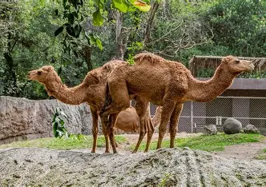

CAMELLO

Es un mamífero adaptado para vivir en zonas desérticas, donde hace mucho calor y hay poca agua.
Tiene patas largas y puede almacenar grasa en sus jorobas, que pueden ser una o dos. Se alimenta de plantas y puede pasar varios días sin beber agua.